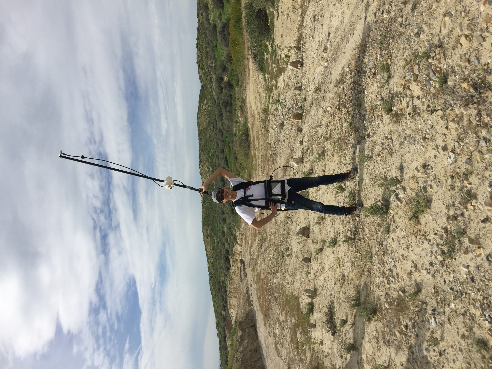
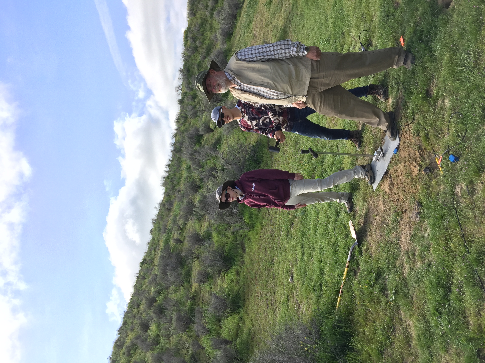
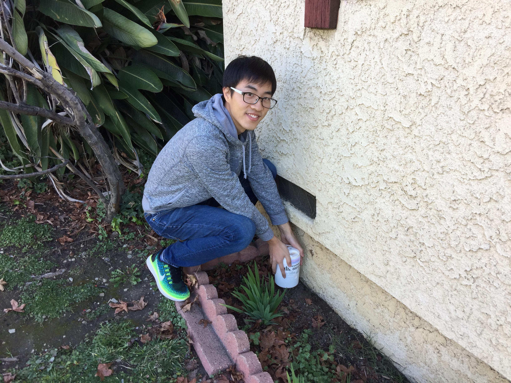
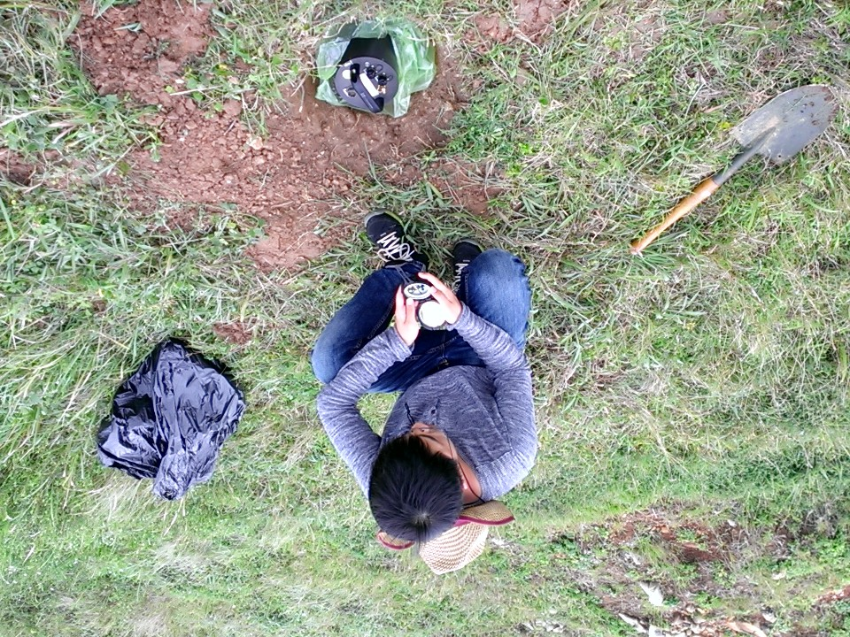

Services
Professional Services
Reviewer of NSF proposals, Nature Communications, GRL, JGR, GJI, IEEE TGRS, SRL, BSSA, Scientific Reports, Computers&Geosciences, CJG, etc.
Convener of the 2023 AGU Fall Meeting session S012: Earthquake Source Characterization and Fault Zone Properties from Micrometer to Kilometer Scales.
Convener of the 2022 AGU Fall Meeting session S001: Advancements in imaging earthquake source processes.
Organizer of the Scripps Institution of Oceanography IGPP Seminar, 2022-23.
Organizer of the IGPP Weekly Seismology and Earthquake Geodesy Discussion, 2022-23.
Moderator of the 2022 UCSD Summer Research Conference.
Organizer of the Caltech Seismo Lab Seminar, 2018-19.
Organizer of the Caltech Geology and Planetary Sciences Social, 2017-18.
Teaching and Mentoring
Lecturer for the IGPP seismology and earthquake geodesy seminar class (2022-23) at UCSD.
Guest Lecturer for the Caltech Ge 102 Introduction to Geophysics (2017-18).
Teaching assistantships for Caltech Ge 161 Plate Tectonics (2020-21), Caltech Ge162 Seismology (2019-20), Caltech Ge 1 Earth and Environment (2018-19), Catech Ge 102 Introduction to Geophysics (2017-18), and USTC undergraduate class Mechanics (2014-15).
Mentoring California State University undergraduate student Lexi Yokomizo (2023), Louisiana State University research assistant Joses B Omojola (2022), Caltech undergraduate student Xiaotian (Jim) Zhang (2019-20), USTC graduate student Qipeng Bai (2016), and USTC graduate student Kai Yang (2015-16).
Field Experiments
Deployment and retrieval of nodal seismometers for the San Bernardino Basin experiment, 2018-19.
Operation of Caltech Millikan Library shaker for active source experiment with the Pasadena Distributed Acoustic Sensing Array, 2018.
Deployment and retrieval of nodal seismometers for the San Gabriel Basin experiment, 2017-19.
Active source experiment on San Andreas Fault at the Carrizo Plain, 2017.
Seismometer deployment for recording noise in Zhoushan Island, Zhejiang, China, 2014.
Some pictures in the field



